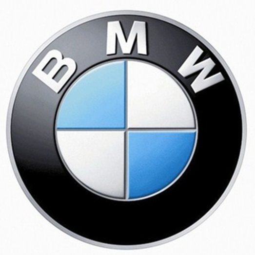

Originally an initialism for Bayerische Motoren Werke in German, or Bavarian Motor Works in English) is a German multinational company which currently produces automobiles and motorcycles, and also produced aircraft engines until 1945.
The company was founded in 1916 and is headquartered in Munich, Bavaria. BMW produces motor vehicles in Germany, Brazil, China, India, South Africa, the United Kingdom, and the United States. In 2015, BMW was the world's twelfth largest producer of motor vehicles, with 2,279,503 vehicles produced.[2] The Quandt family are long-term shareholders of the company, with the remaining shares owned by public float.
